Lecture 08
E21 Computer Engineering Fundamentals
Practice with 16-bit binary floats
Find the binary representation of 0x5248 and convert it to decimal form using the IEEE standard.
In binary, this number is:
5: 0101 — 2: 0010 — 4: 0100 — 8: 1000
0x5248 = 0b0101001001001000
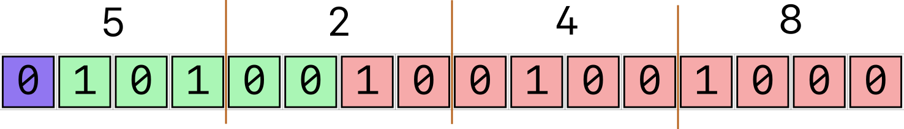
Interpreting it using the IEEE standard, we get
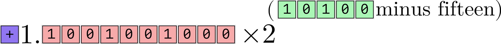
which is \[+1.1001001000_2 \times 2^{5}\]
\[= 2^5 \times \left( 1 \times 2^{0} + 1 \times 2^{-1} + 1 \times 2^{-4} + 1 \times 2^{-7} \right)\]
\[= 32 \times \left(1 + \frac{1}{2} + \frac{1}{16} + \frac{1}{128} \right)\]
\[= 32 \times \left( \frac{128}{128} + \frac{64}{128} + \frac{8}{128} + \frac{1}{128} \right) \]
\[ = 32 \times \frac{201}{128} = \frac{201}{4} = 50.25\]
8-, 16-, 32- and 64- bit floating point numbers
16-bit floating point binary numbers are limited in their range and precision.
Early computers used to use 8-bit numbers
Modern computations are usually done in 64-bit. (That’s why MATLAB calls numbers
double)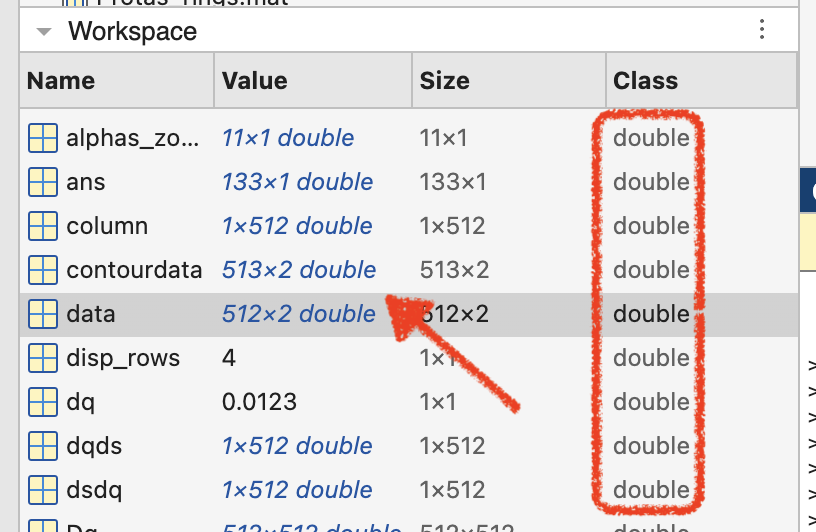
The IEEE 754 Standard
| Size | Sign | Significand | Exponent | Bias | Colloquial |
|---|---|---|---|---|---|
| 8-bit | 1 | 3 | 4 | 7 | Minifloat |
| 16-bit | 1 | 10 | 5 | 15 | Half precision |
| 32-bit | 1 | 23 | 8 | 127 | Single precision |
| 64-bit | 1 | 52 | 11 | 1023 | Double precision |
- Use Float Toy to find the largest possible number of each kind.
Procedure for interpreting IEEE Floats
- Interpret exponent bits as an integer
- Subtract bias from this integer to get the exponent, or power of 2.
- Interpret significand as the binary digits in the number \(1.xxxxxxxxxx\) (unless it’s a subnormal number)
- Multiply significand with \(2^{\text{exponent}}\)
- Interpret sign bit as negative if
1, positive if0.
The need for floating-point numbers
- Real numbers \(\mathbb{R}\) are an uncountably infinite set.
- Rational numbers \(\mathbb{Q}\) form a dense subset of \(\mathbb{R}\)
- You can squeeze an infinite number of rational numbers between any two given real numbers
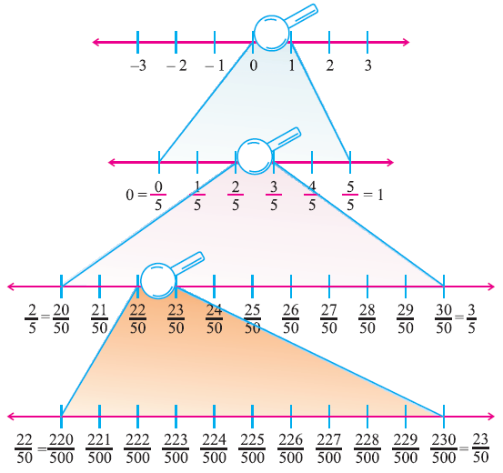
- You can squeeze an infinite number of rational numbers between any two given real numbers
- All integers \(\mathbb{Z}\) are also rational numbers.
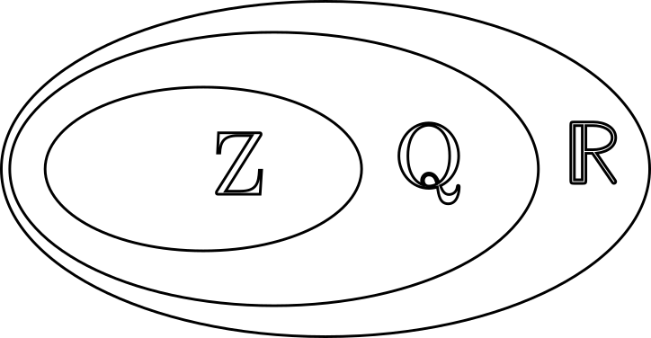
- Floating point numbers are rational numbers !!!!!
Floating Point numbers on the number line
- Between \(2^{-14}\) and \(2^{+16}\), there are \(2^{10} = 1,024\) 16-bit floats between each successive power of 2.
- There are 1,024 ‘16-bit floats’ between 4 and 8. Seems enough to cover any quantity we would need (?)
The number 4 is:
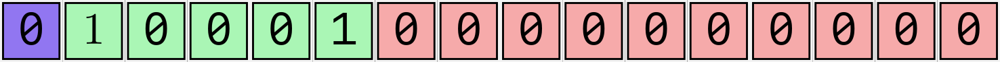
\(1.00...00 \times 2^{17-15} = 4\)The next-biggest number is: \(1.00...01_2 \times 2^{17-15} = \left( 1 + \frac{1}{2^{10}}\right) \times 2^2\)
\(= \frac{1025}{1024} \times 4 = \frac{1025}{256} \approx 4.0039\)
- There are 1,024 ‘16-bit floats’ between 4 and 8. Seems enough to cover any quantity we would need (?)
Increments of Floating Point Numbers
Let’s look at three consecutive floating point numbers.
The number 8:
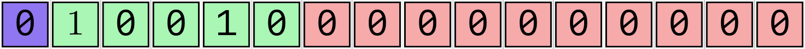
\(1.00...00 \times 2^{18-15} = 8\)
The next-bigger 16-bit float:
\(1.00...01_2 \times 2^{18-15}\)
\(= \left(1 + \frac{1}{2^{10}} \right) \times 2^{3}\)
\(= \frac{1025}{1024} \times 8 = \frac{1025}{128} \approx 8.0078\)
The next-bigger 16-bit float:
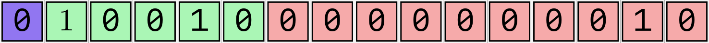
\(1.00...010_2 \times 2^{18-15}\)
\(= \left(1 + \frac{1}{2^{9}} \right) \times 2^{3}\)
\(= \frac{513}{512} \times 8 = \frac{513}{64} \approx 8.0156\)
Increment between successive numbers: \[ 8 \rightarrow 8.0078 \rightarrow 8.0156 \rightarrow \dots \]
Putting this into fractions \[ 8 \rightarrow \frac{1025}{128} \rightarrow \frac{513}{64} \rightarrow \dots \]
or, even better: \[ \frac{1024}{128} \rightarrow \frac{1025}{128} \rightarrow \frac{1026}{128} \rightarrow \dots \]
Increment between \(2^3\) and below \(2^4\) is \(\frac{1}{128} = 2^{-7} = 0.0078125\)
Floating Point numbers on the number line
- There are 1,024 ‘16-bit floats’ between 2048 and 4096. Seems enough to cover any quantity we would need (????)
The number 2048 is:
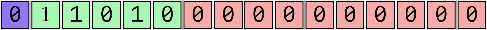
\(1.00...00 \times 2^{26-15} = 2048\)The next-biggest number is: \(1.00...01_2 \times 2^{27-15} = \left( 1 + \frac{1}{2^{10}}\right) \times 2^12\)
\(= \frac{1025}{1024} \times 2048 = 2050\)
- The increment between \(2^{11}\) and \(2^{12}\) appears to be … \(2\)
Loss of precision in Floating Point Numbers
- IEEE Floating point numbers are the most precise near 1.0
e.g., near \(1.0\), the 16- bit floating point numbers are:
\(\displaystyle \left( 1, 1 + \frac{1}{1024}, 1 + \frac{1}{512}, 1 + \frac{1}{512} + \frac{1}{1024} \right)\)
\(\displaystyle = \left( \frac{1024}{1024}, \frac{1025}{1024}, \frac{1026}{1024}, \frac{1027}{1024}\right)\)
\(\approx \left(1, 1.001, 1.002, 1.003, ... \right)\)
For large values, they start losing precision. Near 2048:
\(\left( 2048, 2050, 2052, ...\right)\)
- All floats lose precision the further away you get from 1
- Solution: Use more bits!
Note: Floating Point numbers can be positive or negative
- The sign bit ensures that for every positive number there is a corresponding negative number
- Floats are arranged symmetrically about zero.
- There is a ‘negative zero’ and a ‘positive zero’
NaNs show up on both positive and negative sides of the number line
Floating point numbers on a linear-scale number line
(Instead of using a log scale like before)
For illustrative purposes, let’s use 8-bit floats:
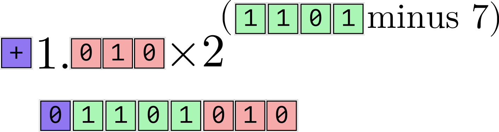
- 8-bit floats have 4 exponent bits (bias 7), 1 sign bit, and 3 significand bits.
Machine Epsilon
- Machine Epsilon (\(\varepsilon\)) is a measure of how precise a floating-point number system is.
- The smaller the \(\varepsilon\), the more precise your number system is.
- Machine Epsilon for a floating point number system is defined as the difference between 1 and the next-bigger number in that system.
| Number System | Machine Epsilon |
|---|---|
| Minifloat (8 bit) | \(2^{-3} = 1.25 \times 10^{-1}\) |
| Half Precision (16 bit) | \(2^{-10} \approx 9.77 \times 10^{-4}\) |
| Single Precision (32 bit) | \(2^{-23} \approx 1.19 \times 10^{-7}\) |
| Double Precision (64 bit) | \(2^{-52} \approx 2.22 \times 10^{-16}\) |
Subnormal numbers and NaNs
NaNstands for ‘Not A Number’. For example, the result of dividing by zero.- The largest exponent (
11111for 16-bit numbers) is reserved forNaN. - Find the largest possible 16-bit floating-point number
- The largest exponent (
- The smallest exponent (
00000for 16-bit numbers) is treated specially.- Normally, we would expect to interpret them as \(2^{0-15} \times 1.0001000101_2\) etc.
- Instead, the smallest exponent (
00000) is assumed to represent \(2^{-14}\), the same as00001. To get smaller numbers, the significand is changed from, e.g., \(1.0001000101_2\) to \(0.0001000101_2\)
Regular 16-bit floats

Subnormal 16-bit floats
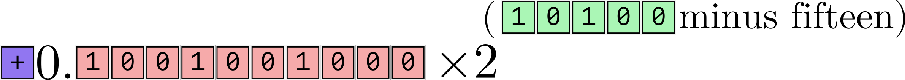